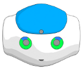
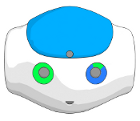
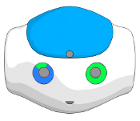
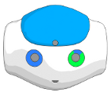
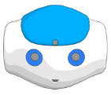

How to use animation mode¶
 Cannot be tested on a simulated robot.
Cannot be tested on a simulated robot.
The animation mode allows you to set the stiffness of each part of NAO separately in order to create animation easily.
They are several ways to do it:
By vocal commands, in English.
The commands are:
Head, left arm, right arm, left leg, right leg.
Some of them may not be available according to the model of your robot.
By tactile sensors and bumpers:
Each bumper controls each leg.
The middle head tactile sensor controls the head.
If your robot has hand tactile sensors, each of them controls each arm and you need to continuously touch it to set off the stiffness of the arms, if not, you can use remaining head tactile sensors to set the stiffness of the arms.
LEDs give you some visual feed-back about which NAO’s parts are stiffened or not:
LEDs on foot are blue if the leg is stiffened and green if not.
For the head and arms, visual feed-back are concentrated on NAO’s eyes.
| Visual information | Stiffened parts |
|---|---|

|
Nothing |
|  | Head |
|  | Left arm |
|  | Right arm |
|  | Head and right arm |
|  | Head and both arms |
How to store joints values with the animation mode¶
Cannot be tested on a simulated robot.
To store joints values you first need to create a Timeline box:
Drag and drop the Templates > Animation box onto your diagram.
Double click on the box and get into the Timeline editor by clicking on:

Go to the recording parameters by clicking on :

Select Interactive using chest button and click on Ok.
Click Ok on the warning.
The animation mode was automatically activated and you are now able to store joints values using the chest button or by saying Store positions has vocal command.
Use the animation mode to set the stiffness of NAO’s parts and store positions whenever you want to record a nice animation.
For more information and practice, see Creating a movement using animation mode section.